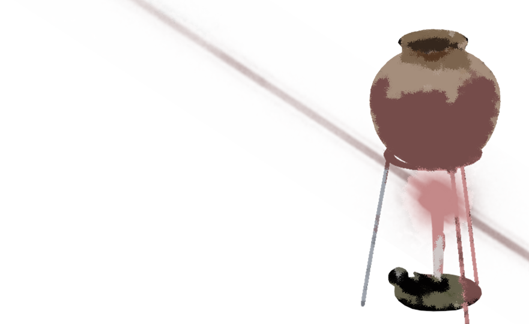
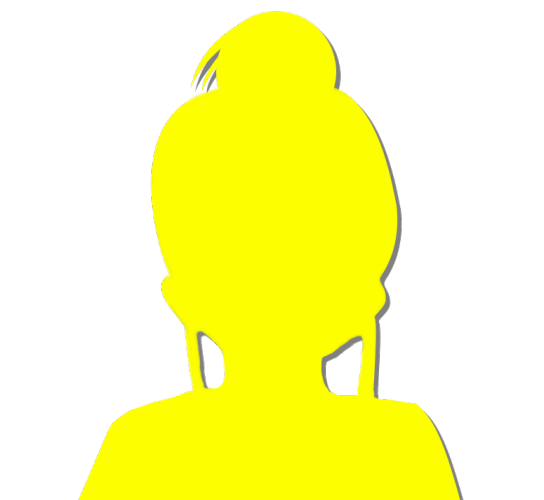

This scene is not unlocked yet in your progress
Solved (Tentative)
There was no particular progress after that, and we went straight back to the Niimura main house.

I'm not in the habit of bathing several times a day, but to keep Goto company, since she missed her bath yesterday,
and to wash off the dirt I'd gotten on myself underground, I was taking my first bath in 7 hours.
"Hey, Goto, once today's thirteenth-year memorial service is over, Erika-chan says she's going to the police." [TN: Buddhist memorials count the year of death as the first year.]
"I see..."
Goto said only that much, then stayed silent, soaking in the tub.
She was probably thinking over the root from earlier.
Goto said only that much, then stayed silent, soaking in the tub.
She was probably thinking over the root from earlier.
With Goto gone silent and just the two of us there, the air felt a little heavy.
I thought about talking to Goto again, but I'd probably just be in her way.
We did get something to reason with, so I'll copy Goto and think things through too.
I thought about talking to Goto again, but I'd probably just be in her way.
We did get something to reason with, so I'll copy Goto and think things through too.

The ritual pot and tripod―
They were almost the same as what I saw in last night's vision.
I remember there were several pots like that underground.
They were almost the same as what I saw in last night's vision.
I remember there were several pots like that underground.
That means the place in the vision probably matches the secret base too.
It's a good place for taking out a pot and doing something in secret.
It's a good place for taking out a pot and doing something in secret.

And the person I saw in the vision, too, is probably not Kotaro-san but Haruka's dad.
Because Kotaro-san doesn't know what made Sakura-san awaken to her witch power.
Because Kotaro-san doesn't know what made Sakura-san awaken to her witch power.
If the one I saw in the vision were Kotaro-san, he'd also know that Sakura-san got covered in blood.
Goto has probably already figured out this much, too.
Goto has probably already figured out this much, too.
If Goto is still keeping silent anyway, that means there's something even more puzzling than that.
"Hey, Goto..."

"What is it?"
Goto turned toward me, her expression unchanged.
Ah, I meant not to get in Goto's way...
Since I've already called her, I'll just go ahead and ask.
Goto turned toward me, her expression unchanged.
Ah, I meant not to get in Goto's way...
Since I've already called her, I'll just go ahead and ask.
"The person I saw in the vision is definitely Haruka's dad, right?"
"Right. If it were Kotaro-san, it would contradict what we heard yesterday. Kotaro-san has to have been telling the truth for that to hold, though... Senpai, nobody could have predicted you'd become able to see even things from the past. So on this point, it wouldn't be strange for Kotaro-san to lie."
Right, the possibility that Kotaro-san is lying, too...
"Right. If it were Kotaro-san, it would contradict what we heard yesterday. Kotaro-san has to have been telling the truth for that to hold, though... Senpai, nobody could have predicted you'd become able to see even things from the past. So on this point, it wouldn't be strange for Kotaro-san to lie."
Right, the possibility that Kotaro-san is lying, too...
"So if we think it through on the assumption that Kotaro-san isn't lying―"

"Then nobody knows that Sakura-san ended up covered in blood.
In other words, the events of the vision you saw, Senpai, must have been, for Niimura-senpai's father and Sakura-san, 'something that would be bad if people found out.'"
Something that would be bad if people found out...?
No way. An affair or something?
Something that would be bad if people found out...?
No way. An affair or something?
No, Sakura-san got her witch power when she was in middle school, Kotaro-san said, so that kind of thing doesn't fit...
But that doesn't mean yesterday's vision was from when the two of them were in middle school.
Maybe she just had two occasions to get covered in Ojisan's blood...
But that doesn't mean yesterday's vision was from when the two of them were in middle school.
Maybe she just had two occasions to get covered in Ojisan's blood...
"Hey, Goto, the vision I saw, was it from when the two of them were in middle school?"
"Probably, yes. If Niimura-senpai's father had suffered an injury bad enough to cover someone in blood after he left the Arata settlement―
that is, after he went on to high school, then Kogori-senpai's father would know about it too.
Since your father didn't mention it yesterday, we can guess it was before he started high school."
I see. Goto really is quick-witted.
I see. Goto really is quick-witted.
"So I think that was the moment Sakura-san got her witch power.
But it seems Sakura-san didn't try to hide the witch power itself, so
the 'something that would be bad if people found out' must not have been the witch power, but the reason
Niimura-senpai's father got badly hurt."
If I remember right, he broke his leg hunting, and because of that Ojisan lost his confidence that he could live in Arata and left the settlement. That's what Kotaro-san said.
Haruka and Dad also said he had a bad leg.
If I remember right, he broke his leg hunting, and because of that Ojisan lost his confidence that he could live in Arata and left the settlement. That's what Kotaro-san said.
Haruka and Dad also said he had a bad leg.
Besides, nobody would go hunting in a place like that,
so if the broken leg = yesterday's vision, it means Ojisan and Sakura-san didn't tell the real cause of the injury.
so if the broken leg = yesterday's vision, it means Ojisan and Sakura-san didn't tell the real cause of the injury.
"So Ojisan and Sakura-san tried to hide what made him break his leg, right?"
"That's right.
"That's right.

If it was in middle school, Sakura-san wouldn't have been allowed to go underground or take out a pot either.
There's no way Sakura-san, who faithfully kept the rule, could have told anyone about it."
Only if Kotaro-san isn't lying―that's the condition, but if what I saw yesterday was 'sensing danger,' then it has to lead to the curse-killings.
In other words, unless we figure out what the two of them were doing there, we can't prevent the curse-killings.
In other words, unless we figure out what the two of them were doing there, we can't prevent the curse-killings.
"And, Senpai... From here on, it's pure guesswork.
I forced a lot of things that were bugging me together... so it's a bit of a wild idea..."
But Goto doesn't try to talk about things like this unless she's fairly confident.
Which means she's put together an assumption that covers the whole picture.
But Goto doesn't try to talk about things like this unless she's fairly confident.
Which means she's put together an assumption that covers the whole picture.
"Do you remember the talk about Droga?"

"Niimura-senpai's father...
was making Droga at the secret base, wasn't he?"
That really was a wild idea.
A pot and a tripod, and a fire.
It certainly did look like someone making a drug.
That really was a wild idea.
A pot and a tripod, and a fire.
It certainly did look like someone making a drug.
"The Arata settlement has a native variety of cherry tree.
If its roots were the raw material for Droga..."
"The roots are the raw material?"
"The roots are the raw material?"
"More than 70 years ago, someone took the cherry trees here away, 'roots and all.'
Maybe they wanted Droga.
I don't think it would be strange if the method leaked outside at some point over all those years."

"And that underground space. Why do they use it to store the ritual implements?
Wasn't it a place for taking cherry roots?
Niimura-senpai's father learned how to make Droga somehow, and put it into practice at that secret base.
It worked, but he couldn't control his own strength and got badly hurt.
Probably an open fracture of the leg."
"An open fracture... what's that?"
"It's an injury where the broken bone pierces the skin and comes out. It's also called a compound fracture. If the broken bone damaged an artery in his leg, and the blood that spurted out got on Sakura-san..."
"It's an injury where the broken bone pierces the skin and comes out. It's also called a compound fracture. If the broken bone damaged an artery in his leg, and the blood that spurted out got on Sakura-san..."
That would certainly add up.
Still, a broken bone sticking out through the skin... It hurts just to imagine it...
Still, a broken bone sticking out through the skin... It hurts just to imagine it...
"And this is an even shakier guess...
Maybe if you get covered in the blood of someone who used Droga..."
Hmm, at this point it's pretty hard to call it even a guess...
Hmm, at this point it's pretty hard to call it even a guess...
But it definitely is something I have in common with Sakura-san.
Get covered in Ojisan's blood, and you gain the witch power―precognition.
And the trait that applies only to Ojisan is having used Droga.
The one element connecting two people with no ties at all: me and Sakura-san.
Get covered in Ojisan's blood, and you gain the witch power―precognition.
And the trait that applies only to Ojisan is having used Droga.
The one element connecting two people with no ties at all: me and Sakura-san.
No, wait a minute...
Then who on earth made the Droga that was sent to Megasawa City...?
Then who on earth made the Droga that was sent to Megasawa City...?
"Hey, was the one who sent the Droga to Obasan maybe Sakura-san?"
"No, that contradicts her trying to make Niimura-senpai's mother give up the murder. So if Niimura-senpai's father made Droga, and because of that someone else learned how to make it and tried to experiment with it..."
"No, that contradicts her trying to make Niimura-senpai's mother give up the murder. So if Niimura-senpai's father made Droga, and because of that someone else learned how to make it and tried to experiment with it..."
That would be limited to people in the Arata settlement who were of a certain age back then.


Even Chiga-nee knew about Droga, so the people of the settlement must have known it existed, even if they didn't know how to make it.

"The Niimura main house's cherry tree is probably failing not so much from old age as because too many of its roots were taken to use as raw material for Droga.
There were cobwebs on those iron bars earlier, right?
Only around the door were there hardly any cobwebs.
That means someone has been going in and out often, even after it was put off-limits."
Goto's theory is, unusually for her, quite a stretch.
But even so, things connect up so well it's creepy.
But unfortunately, no matter what, it doesn't connect all the way to the curse-killings.
But even so, things connect up so well it's creepy.
But unfortunately, no matter what, it doesn't connect all the way to the curse-killings.
"Hey, Goto, does the Droga stuff connect to the curse-killings...?"
When I said that, Goto looked down and fell into thought again.
She kept making small nodding motions.
She was probably going over her own ideas again.
She kept making small nodding motions.
She was probably going over her own ideas again.
"I think Droga has practically no connection at all to the curse-killings.
If there's any at all, it's only that it led to Sakura-san's death.
Niimura-senpai's mother got help from her in Megasawa, and all because of that..."
"No connection at all... um, meaning what?"
"In terms of 'kishotenketsu,' Sakura-san's death is the 'setup.' [TN: Kishotenketsu: four parts, ki 'setup', sho 'development', ten 'twist', ketsu 'conclusion'.] No, that's not right. Sakura-san having her head cut off is the 'setup.' Someone is definitely lying about this."
"No connection at all... um, meaning what?"
"In terms of 'kishotenketsu,' Sakura-san's death is the 'setup.' [TN: Kishotenketsu: four parts, ki 'setup', sho 'development', ten 'twist', ketsu 'conclusion'.] No, that's not right. Sakura-san having her head cut off is the 'setup.' Someone is definitely lying about this."
"When you say lying...?"
"First, as things stand, I can think of three possibilities.
"First, as things stand, I can think of three possibilities.
The first is the case where what led Sakura-san to gain her witch power was something Kotaro-san actually knew.
In that case, as I said at the start, every guess so far is wrong.
And if Kotaro-san actually cut off Sakura-san's head, then he hated the settlement's rule, or the settlement itself, and staged curse-killings to cause the whole series of incidents."
"The second is if Erika-chan was lying.
That would mean she saw something to do with the curse-killings.
The reason would be that she doesn't want to hand the people of the settlement over to the police, but that's a contradiction.
Erika-chan is going to consult the police once the thirteenth-year memorial service is over, isn't she?
If she were hiding something, she wouldn't need to do that, and she wouldn't want to talk to us about the curse-killings in the first place."
"The third is if Shirozaki-san was lying.
Shirozaki-san's wife was killed.
If Shirozaki-san is lying, then his wife's killing has nothing at all to do with Sakura-san's death.
For example, maybe Shirozaki-san killed her by accident at the end of a marital fight.
But Shirozaki-san went out of his way to give you the cherry branch.
I can't see him doing something that risky, something that could expose his crime."
"So we've come full circle, and it's Kotaro-san who's lying after all?"
"That's possible too, but... But if so, something's off. Kotaro-san telling the truth is the case that fits the situation better. Kotaro-san couldn't have known about your vision, and it doesn't contradict that at all either. So―"
"That's possible too, but... But if so, something's off. Kotaro-san telling the truth is the case that fits the situation better. Kotaro-san couldn't have known about your vision, and it doesn't contradict that at all either. So―"
Goto paused a little, then took a slow, deep breath.
"So if it's possible at all, the culprit is...
No, there's more than one mastermind.
What's more, even without being aware of each other, they can each grasp what their accomplice wants."
............?
............??
............???
I don't really get what she's saying...
............?
............??
............???
I don't really get what she's saying...
"Um, explain, please..."
"Sorry, I put that in a difficult way.
If the stories don't contradict each other, there's probably more than one culprit.
That's because they can get their stories straight with each other.
But in this case, I don't think the culprits have gotten their stories straight.
Because there's an eerie lack of lies.
Everyone is telling nothing but the truth.
Except for one thing..."
"Only one lie?"
"I think it's probably that someone who knows how Sakura-san's head came to be cut off is pretending not to know."
"I think it's probably that someone who knows how Sakura-san's head came to be cut off is pretending not to know."

"The first to find her was Kotaro-san, so 'Sakura-san's head had been cut off where she fell' is probably the lie.
That way, no matter how much he lies, there's no way to check it."
Then Kotaro-san is the culprit after all?
But from how Goto looked, she didn't seem to think so either.
But from how Goto looked, she didn't seem to think so either.
"There must have been at least one more witness to the beheading.
Whether that's Erika-chan, Shirozaki-san, or someone else, I don't know.
In other words, the reason Sakura-san's head was cut off must not get out: that's the one understanding Kotaro-san and the other mastermind share.
That alone is what's driving all the curse-killings."
"So Kotaro-san isn't necessarily the culprit?"
"That's right. Kotaro-san only knows how Sakura-san's head came to be cut off. Whether he carried out the beheading himself doesn't matter much, I think. Why her head was cut off, and who the other person who witnessed it is. If we figure that out, I think it'll lead to preventing the curse-killings."
"That's right. Kotaro-san only knows how Sakura-san's head came to be cut off. Whether he carried out the beheading himself doesn't matter much, I think. Why her head was cut off, and who the other person who witnessed it is. If we figure that out, I think it'll lead to preventing the curse-killings."
"Who could it be...?"
"From here on, I think it comes down to the emotional side of Kotaro-san and the other person. So I can't take the reasoning any further. What I said yesterday, 'there being no culprit is the background,' I'll correct to 'there's no culprit pulling all the strings.' Also... Senpai, do you know this story?"
"From here on, I think it comes down to the emotional side of Kotaro-san and the other person. So I can't take the reasoning any further. What I said yesterday, 'there being no culprit is the background,' I'll correct to 'there's no culprit pulling all the strings.' Also... Senpai, do you know this story?"

"One day, I killed my little sister because her crying got on my nerves, and threw the body down the well. When I went to look the next day, the body had vanished.
5 years later, I killed a friend over a trivial fight, and threw the body down the well. When I went to look the next day, the body had vanished.
10 years later, I killed a woman I'd gotten pregnant in a drunken moment, and threw the body down the well. When I went to look the next day, the body had vanished.
15 years later, I killed a boss I hated, and threw the body down the well. When I went to look the next day, the body had vanished."
5 years later, I killed a friend over a trivial fight, and threw the body down the well. When I went to look the next day, the body had vanished.
10 years later, I killed a woman I'd gotten pregnant in a drunken moment, and threw the body down the well. When I went to look the next day, the body had vanished.
15 years later, I killed a boss I hated, and threw the body down the well. When I went to look the next day, the body had vanished."
"20 years later, I killed my mother because she needed nursing care and was in the way, and threw the body down the well.
When I went to look the next day, the body had 'not' vanished.
The next day, and the next, the body stayed where it was―
This is one of those 'scary once you get it' stories you often see online."
"Oh, I've heard that one.
If I remember right, the mother hid the bodies thrown down the well somewhere else, somewhere hard to find, right?
So nobody would find out about her son's crimes."
"Right. In this mother and son's case, even though they never got their stories straight, their interests lined up, and that's why this happened.
I think this case is similar."
"Meaning Erika-chan plays the mother?"
"No, it's not necessarily Kotaro-san and Erika-chan who caused the curse-killings. Like in that example, their interests lined up emotionally, so they were able to carry out the curse-killings without exchanging a word. That's why nobody's stories contradict each other. Because at least one mastermind doesn't know what the other accomplice did. You can't lie about something you don't know."
"No, it's not necessarily Kotaro-san and Erika-chan who caused the curse-killings. Like in that example, their interests lined up emotionally, so they were able to carry out the curse-killings without exchanging a word. That's why nobody's stories contradict each other. Because at least one mastermind doesn't know what the other accomplice did. You can't lie about something you don't know."
"Hmm, this is complicated...
Um, in terms of that example,
the body in the well = the reason Sakura-san's head was cut off
the son = one of the masterminds
the mother = the other mastermind
Is that about right?"
the body in the well = the reason Sakura-san's head was cut off
the son = one of the masterminds
the mother = the other mastermind
Is that about right?"
"If there are two masterminds, that's correct.
What drives the curse-killings is strictly the emotional side.
And that relates to the affair of Sakura-san's beheading.
While we're at it, think of the string of suicides and the reason people die in April as completely unnecessary information―misdirection."
"All of it misdirection..."
"Yes. All the reasoning up to now gets reset."
"Yes. All the reasoning up to now gets reset."
"Got it. Then... um...
what should we do from here?"
"Since even the masterminds may not know everything, there's no telling what moves they'll make from here. They act for the emotional interests the masterminds share. So―"
"Since even the masterminds may not know everything, there's no telling what moves they'll make from here. They act for the emotional interests the masterminds share. So―"
"So...
preventing it is extremely difficult.
The only thing we can rely on is... um...
I don't mean to pressure you, but...
your intuition, and nothing else..."
"I see... I'll do my best! After all, I've got nerves of steel!"
"All I can do is put forward this hypothesis with no clear basis. The rest... I'm leaving to you."
"I see... I'll do my best! After all, I've got nerves of steel!"
"All I can do is put forward this hypothesis with no clear basis. The rest... I'm leaving to you."
Goto did everything she could.
It was pretty hard to follow, and I'm not confident I understood all of it, but one thing I can say is that it depends on my intuition.
A little more... I feel like in just a little more, the truth will come into view.
It was pretty hard to follow, and I'm not confident I understood all of it, but one thing I can say is that it depends on my intuition.
A little more... I feel like in just a little more, the truth will come into view.
Read ✓ Next: Intimidation →